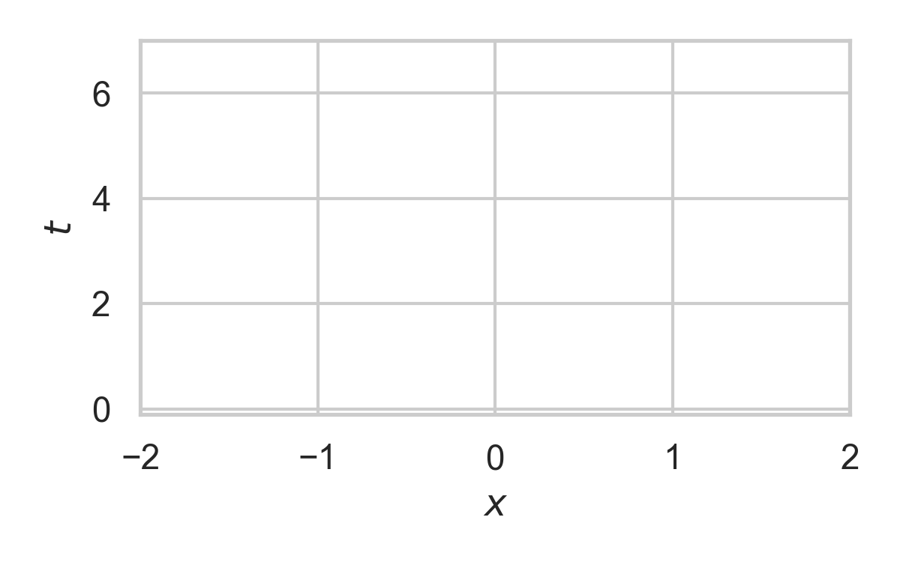
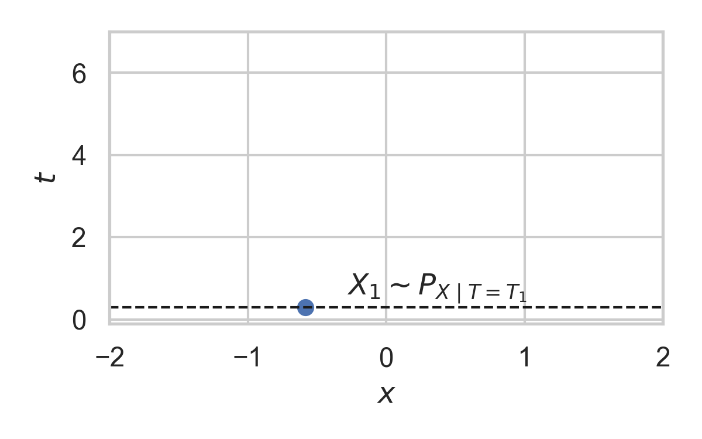
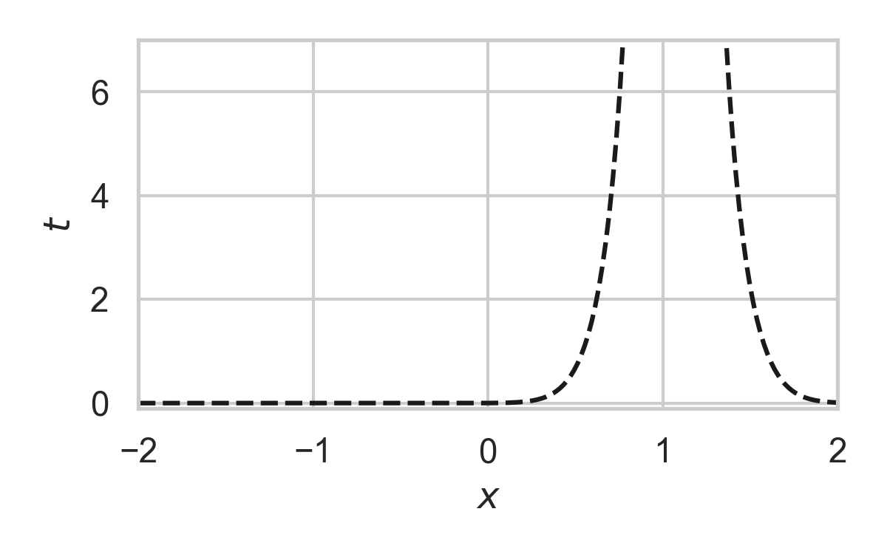

Greedy Poisson Rejection Sampling
Gergely Flamich
gergely-flamich.github.io/talks
1. Motivation
1.1. Example: Lossy Image Compression


1.2. The Setup
Get some data \(Y \sim P_Y\)
\(X = f(Y)\)
\(\hat{X} = \lfloor X \rceil\)
\(\mathbb{H}[\hat{X}] < \infty\)
🤔 \(\lfloor \cdot \rceil\) not differentiable
2. The Alternative: Relative Entropy Coding
💡 stochastic alternative to \(\lfloor \cdot \rceil\) & entropy coding
2.1. Relative Entropy Coding
💡 \(X = f(Y) + \epsilon\)
💡 Send bits s.t. decoder can draw \(X \sim P_{X \mid Y}\)
✅ Can use reparameterization trick!
🤔 How do we encode \(X\)?
3. Greedy Poisson Rejection Sampling
3.1. Recap of the Problem
Correlated r.v.s \(X, Y \sim P_{X, Y}\)
Alice receives \(Y \sim P_Y\)
Bob wants to simulate \(X \sim P_{X \mid Y}\)
Alice and Bob share \(P_{X}\)
Share common randomness \(S\)
Shorthand: \(P = P_X\), \(Q = P_{X \mid Y}\)
3.2. Poisson Processes
- Collection of random points in space
- Focus on spatio-temporal processes on \(\mathbb{R}^D \times \mathbb{R}^+\)
- Exponential inter-arrival times
- Spatial distribution \(P\)
- We will pick it as the common randomness!
3.3. Example with \(P = \mathcal{N}(0, 1)\)

3.4. Example with \(P = \mathcal{N}(0, 1)\)

3.5. Example with \(P = \mathcal{N}(0, 1)\)

3.6. Example with \(P = \mathcal{N}(0, 1)\)

3.7. Example with \(P = \mathcal{N}(0, 1)\)

3.8. Example with \(P = \mathcal{N}(0, 1)\)

3.9. Example with \(P = \mathcal{N}(0, 1)\)

3.10. Example with \(P = \mathcal{N}(0, 1)\)

3.11. Greedy Poisson Rejection Sampling
💡 Delete some of the points, encode index of the first point that remains
3.12. GPRS with \(P = \mathcal{N}(0, 1), Q = \mathcal{N}(1, 1/16)\)

3.13. GPRS with \(P = \mathcal{N}(0, 1), Q = \mathcal{N}(1, 1/16)\)

3.14. GPRS with \(P = \mathcal{N}(0, 1), Q = \mathcal{N}(1, 1/16)\)

3.15. GPRS with \(P = \mathcal{N}(0, 1), Q = \mathcal{N}(1, 1/16)\)

3.16. GPRS with \(P = \mathcal{N}(0, 1), Q = \mathcal{N}(1, 1/16)\)

3.17. GPRS with \(P = \mathcal{N}(0, 1), Q = \mathcal{N}(1, 1/16)\)

3.18. GPRS with \(P = \mathcal{N}(0, 1), Q = \mathcal{N}(1, 1/16)\)

3.19. How to find the graph?
\[ \varphi(x) = \int_0^{\frac{dQ}{dP}(x)} \frac{1}{w_Q(\eta) - \eta \cdot w_P(\eta)} \, d\eta, \]
where \[ w_P(h) = \mathbb{P}_{Z \sim P}\left[\frac{dQ}{dP}(Z) \geq h \right] \] \[ w_Q(h) = \mathbb{P}_{Z \sim Q}\left[\frac{dQ}{dP}(Z) \geq h \right] \]
3.20. Analysis of GPRS
Codelength
Runtime
\[ \mathbb{E}[K \mid Y] = \exp(D_{\infty}[P_{X \mid Y} \Vert P_X]) \]
3.21. Speeding up GPRS
3.22. Fast GPRS with \(P = \mathcal{N}(0, 1), Q = \mathcal{N}(1, 1/16)\)

3.23. Fast GPRS with \(P = \mathcal{N}(0, 1), Q = \mathcal{N}(1, 1/16)\)

3.24. Fast GPRS with \(P = \mathcal{N}(0, 1), Q = \mathcal{N}(1, 1/16)\)

3.25. Fast GPRS with \(P = \mathcal{N}(0, 1), Q = \mathcal{N}(1, 1/16)\)

3.26. Fast GPRS with \(P = \mathcal{N}(0, 1), Q = \mathcal{N}(1, 1/16)\)

3.27. Fast GPRS with \(P = \mathcal{N}(0, 1), Q = \mathcal{N}(1, 1/16)\)

3.28. Analysis of faster GPRS
Now, encode search path \(\pi\).
\(\mathbb{H}[\pi] \leq I[X; Y] + \log(I[X; Y] + 1) + \mathcal{O}(1)\)
\(\mathbb{E}[\lvert\pi\rvert] = \mathcal{O}(I[X; Y])\)
This is optimal.
4. Take home message: GPRS
- GPRS is a rejection sampler using Poisson processes
- Can be used for relative entropy coding
- Has an optimally efficient variant for 1D, unimodal distributions